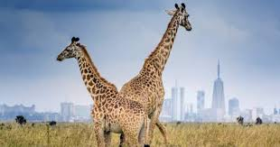

Nairobi

Nairobi is Kenya’s capital city. The third smallest yet the most populous of the counties; it also serves as the capital city of Kenya. “Nairobi” comes from a Maasai phrase ‘Enkare Nyrobi’, which means “cool water”. The city lies in the south central part of Kenya, at an elevation of 1,795 metres (5,889 ft).Nairobi was founded in 1899 by colonial authorities in British East Africa, as a rail depot on the Uganda - Kenya RailwayThe town quickly grew to replace Mombasa as the capital of Kenya in 1907. After independence in 1963, Nairobi became the capital of the Republic of Kenya.
After independence in 1963, Nairobi became the capital of the Republic of Kenya. During Kenya's colonial period, the city became a centre for the colony's coffee, tea and sisal industry.
Nairobi is home of the Kenyan Parliament Buildings and hosts thousands of Kenyan businesses and over 1000 major international companies and organizations, including the United Nations Environment Programme (UN Environment) and the United Nations Office at Nairobi (UNON). Nairobi is an established hub for business and culture. The Nairobi Securities Exchange (NSE) is one of the largest in Africa and the second-oldest exchange on the continent. It is Africa's fourth-largest exchange in terms of trading volume, capable of making 10 million trades a day. It also contains the Nairobi National Park. Nairobi joined the UNESCO Global Network of Learning Cities in 2010.